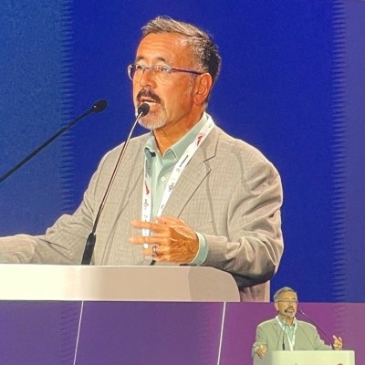

Schedule (Tentative)
| Time | Session |
|---|---|
| 08:00 – 08:10 | Introduction |
| 08:10 – 08:30 |

Keynote Presentation 1
Keynote
Jim Misener WSP 
AbstractAbstract will be announced closer to the workshop date. Speaker BioSpeaker bio will be announced closer to the workshop date. |
| 08:30 – 08:50 |

Keynote Presentation 2
Keynote
Prof. Dr. Jiaqi Ma University of California, Los Angeles AbstractAbstract will be announced closer to the workshop date. Speaker BioDr. Jiaqi Ma is Director of the FHWA/UCLA Center of Excellence on New Mobility and Automated Vehicles, Professor at the UCLA Samueli School of Engineering, Director of the UCLA Mobility Lab, and Associate Director of the UCLA Institute of Transportation Studies. He has led and managed numerous transportation research projects funded by the U.S. Department of Transportation, National Science Foundation, state Departments of Transportation, and other federal, state, and local agencies. His research spans automated driving, mobility digital twins, multimodal sensing, cooperative perception and decision-making, robotics, spatial data mining, simulation, and reasoning. |
| 08:50 – 09:10 |

Keynote Presentation 3
Keynote
Prof. Ignacio Alvarez THI & Intel Labs 
AbstractAbstract will be announced closer to the workshop date. Speaker BioSpeaker bio will be announced closer to the workshop date. |
| 09:10 – 09:30 |
Keynote Presentation 4
Keynote
Prof. Dr. Cathy Wu Massachusetts Institute of Technology AbstractAbstract will be announced closer to the workshop date. Speaker BioSpeaker bio will be announced closer to the workshop date. |
| 09:30 – 10:00 | Coffee Break Coffee Break |
| 10:00 – 10:20 |

Keynote Presentation 5
Keynote
Dr. Can Cui BCAI AbstractAbstract will be announced closer to the workshop date. Speaker BioSpeaker bio will be announced closer to the workshop date. |
| 10:20 – 10:40 |

Keynote Presentation 6
Keynote
Prof. Vincent Fremont École Centrale de Nantes 
AbstractAbstract will be announced closer to the workshop date. Speaker BioSpeaker bio will be announced closer to the workshop date. |
| 10:40 – 11:00 |

Keynote Presentation 7
Keynote
Prof. Bassam Alrifaee University of the German Federal Armed Forces Munich AbstractAbstract will be announced closer to the workshop date. Speaker BioSpeaker bio will be announced closer to the workshop date. |
| 11:00 – 11:20 |

Keynote Presentation 8
Keynote
Prof. Ayesha Choudhary Jawaharlal Nehru University AbstractAbstract will be announced closer to the workshop date. Speaker BioSpeaker bio will be announced closer to the workshop date. |
| 11:20 – 12:00 | Panel Discussion I Panel |
| 12:00 – 13:00 | Lunch |
| 13:00 – 13:20 |

Keynote Presentation 9
Keynote
Prof. Thomas Bräunl University of Western Australia AbstractAbstract will be announced closer to the workshop date. Speaker BioSpeaker bio will be announced closer to the workshop date. |
| 13:20 – 13:40 |

Keynote Presentation 10
Keynote
Prof. Johannes Betz TUM AbstractAbstract will be announced closer to the workshop date. Speaker BioSpeaker bio will be announced closer to the workshop date. |
| 13:40 – 14:00 |

Keynote Presentation 11
Keynote
Prof. Valentina Donzella Queen Mary University of London 
AbstractAbstract will be announced closer to the workshop date. Speaker BioSpeaker bio will be announced closer to the workshop date. |
| 14:00 – 14:20 |

Keynote Presentation 12
Keynote
Prof. Felix Heide Princeton University & Torc Robotics 
AbstractAbstract will be announced closer to the workshop date. Speaker BioSpeaker bio will be announced closer to the workshop date. |
| 14:20 – 14:40 | Coffee Break Coffee Break |
| 14:40 – 15:00 |

Keynote Presentation 13
Keynote
Prof. Dr. Jiachen Li University of California, Riverside AbstractAbstract will be announced closer to the workshop date. Speaker BioSpeaker bio will be announced closer to the workshop date. |
| 15:00 – 15:20 |
Keynote Presentation 14
Keynote
Prof. Fawad Ahmad Rochester Institute of Technology 
AbstractAbstract will be announced closer to the workshop date. Speaker BioSpeaker bio will be announced closer to the workshop date. |
| 15:20 – 15:40 |
Keynote Presentation 15
Keynote
Dr. Ran Tian NVIDIA AbstractAbstract will be announced closer to the workshop date. Speaker BioSpeaker bio will be announced closer to the workshop date. |
| 15:40 – 16:00 |

Keynote Presentation 16
Keynote
Zhenzhen Liu Cornell University AbstractAbstract will be announced closer to the workshop date. Speaker BioSpeaker bio will be announced closer to the workshop date. |
| 16:00 – 16:30 | Panel Discussion II Panel |
| 16:30 – 17:00 | Coffee Break Coffee Break |
| 17:00 – 17:20 |

Paper Oral 1: OpenViCA: Video Continuation for Automotive Driving Scenes by Streamlining and Fine-Tuning Open Source Models with Public Data
Oral
Björn Möller TU Braunschweig 
AbstractAbstract will be announced closer to the workshop date. Speaker BioSpeaker bio will be announced closer to the workshop date. |
| 17:20 – 17:40 |

Paper Oral 2: AutoVDC: Automated Vision Data Cleaning Using Vision-Language Models
Oral
Santosh Vasa Mercedes-Benz Research & Development North America 
AbstractTraining of autonomous driving systems requires extensive datasets with precise annotations to attain robust performance. Human annotations suffer from imperfections, and multiple iterations are often needed to produce high-quality datasets. However, manually reviewing large datasets is laborious and expensive. In this paper, we introduce AutoVDC (Automated Vision Data Cleaning) and investigate the utilization of Vision-Language Models (VLMs) to automatically identify erroneous annotations in vision datasets, thereby enabling users to eliminate these errors and enhance data quality. Speaker BioSpeaker bio will be announced closer to the workshop date. |
| 17:40 – 17:50 | Award Ceremony (Best Paper Awards) |
| 17:50 – 18:00 | Final Remarks, Group Picture & Closing |
Final schedule, room allocation, and speaker order will be announced closer to the workshop date.